이 글은 전체 2편 중 1편입니다. 긴 영상을 주제 흐름에 맞춰 나누어 정리했습니다.
채널: 휴먼스토리 | 길이: 49:51 | 날짜: 2026-05-26
이 글은 전체 2편 중 1편입니다. 현재 글은 0:00부터 25:14까지, 뉴욕과 LA 초반 일정에서 확인된 WD 정승민 대표의 미국 진출 현장과 창업 배경을 다룹니다.
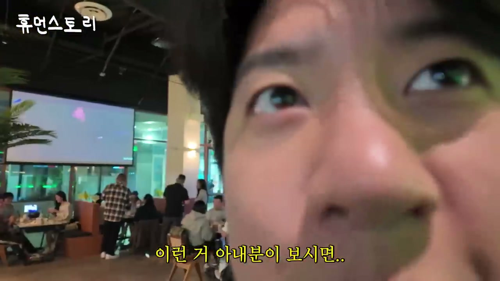
영상은 처음부터 강한 숫자 대비로 시청자를 끌어들인다. 진행자는 “1박에 얼마냐”고 묻고, 정승민 대표 일행은 뉴욕의 고급 숙소가 1박 1,300만 원 수준이라고 답한다. 이어 사업 경력은 약 15년, 자영업 8년, 프랜차이즈 운영 8년이라는 시간이 제시된다. 창업 자금은 2,000만 원이었고, 현재는 700개 매장과 2,000억 매출 규모로 성장했다는 설명이 붙으면서 영상의 핵심 질문이 만들어진다.
이 장면의 의미는 단순한 부의 과시가 아니다. “2,000만 원으로 시작한 사람이 어떻게 1박 1,300만 원짜리 공간에 머물 수 있는 단계까지 왔는가”라는 서사 구조를 만든다. 동시에 숙소는 대표가 직접 예약한 것이 아니라 미국 가맹점주가 마련한 것으로 밝혀지며, 프랜차이즈 본사가 해외 점주에게 어떤 상징적 위치에 있는지도 보여준다. 영상은 이 대비를 통해 이후의 모든 내용을 창업 성장기, 해외 진출기, 현장 검증기로 읽게 만든다.
초반에는 미국 현지 매장을 차례로 방문한다는 일정도 빠르게 예고된다. LA 인쌩맥주, 뉴욕 이자카야 시선, 버지니아 1943 등이 언급되며, 미국 여러 지역에 한국식 주점 브랜드가 들어가고 있음을 보여준다. 제작진은 현지 손님, 점주, 직원, 대표를 모두 인터뷰하면서 숫자만 나열하지 않고 실제 운영 현장을 확인하는 방식으로 이야기를 전개한다.
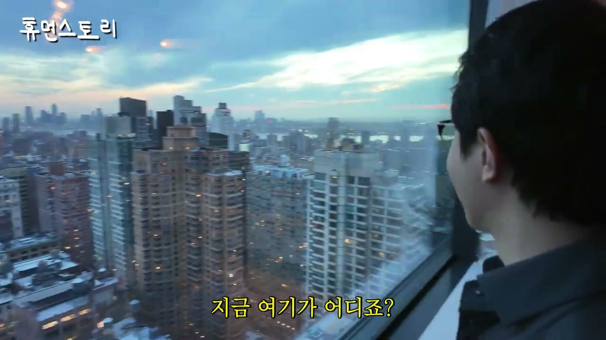
뉴욕 숙소 장면에서 회사명은 기존 “위벨롭먼트”에서 최근 “WD”로 바뀌었다고 소개된다. 진행자는 “WD의 미국 진출을 위하여”라고 건배를 제안하고, 정승민 대표와 일행은 주스를 들고 가볍게 건배한다. 이 장면은 미국 일정의 공식 출발점처럼 기능한다. 숙소의 높은 가격, 뉴욕의 위치, 회사명 변경, 미국 진출 건배가 한꺼번에 제시되며 브랜드가 국내 프랜차이즈를 넘어 해외 시장을 바라보고 있음을 분명히 한다.
정 대표는 자신을 안산에서 사업하는 사람으로 소개한다. 프랜차이즈 회사를 운영하고 있고, 오픈한 지점이 약 700개 정도 있으며, 700개 매장의 매출 합이 약 2,000억 원이라고 밝힌다. 진행자가 “그러면 1,300만 원짜리 방에서 주무실 만하다”고 농담하자, 정 대표는 자신이 잡은 숙소가 아니라 뉴욕 매장을 연 가맹점주가 준비해 준 것이라고 설명한다. 이 대답은 성공한 대표의 소비보다 가맹점주와 본사 사이의 관계를 강조한다.
또한 뉴욕의 가맹점주는 한국인이고, 한국에서 만든 브랜드를 뉴욕에서 운영하고 있다고 말한다. 이때 매장이 40평이 넘고 월매출이 4억 원을 넘는다는 말이 처음 등장한다. 고급 숙소에서 시작한 대화가 곧바로 실제 매장 매출로 연결되면서, 영상은 “보여주기식 해외 출장”이 아니라 “현지에서 매출이 나오는 프랜차이즈 검증”으로 방향을 잡는다.
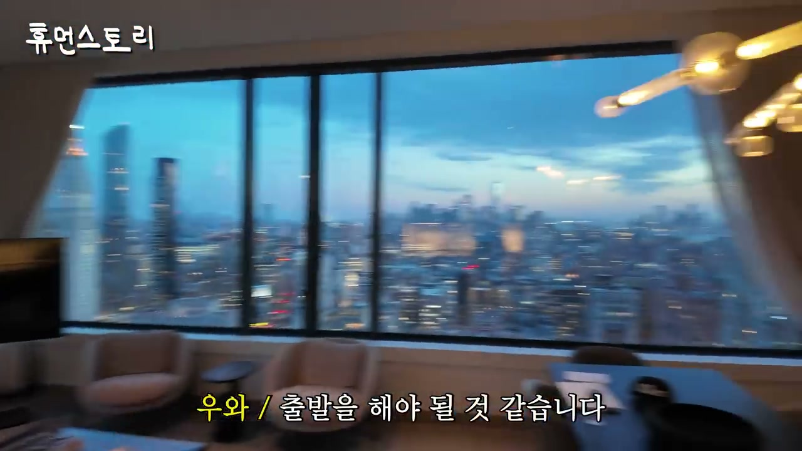
정 대표는 뉴욕점이 맨해튼에 있다고 설명한다. 뉴욕의 가장 중심가라는 진행자의 반응에 대표는 맞다고 답하고, 뉴욕뿐 아니라 캘리포니아와 버지니아에도 매장을 오픈했기 때문에 이 출장에서 뉴욕을 찍고 다른 지역으로 넘어가야 한다고 말한다. 이 일정은 미국 진출이 단일 매장 실험이 아니라 복수 지역 확장이라는 점을 보여준다. 뉴욕 매장의 월매출 4억 원도 “연매출”이 아니라 “월매출”이라는 점이 강조된다.
정 대표가 운영하는 브랜드 목록도 이 구간에서 정리된다. 인쌩맥주, 이자카야 시선, 1943, 정직화벌집삼겹이라는 배달 브랜드, 브샤브샤, 그리고 최근 오픈한 혼술바 43번지가 언급된다. 여러 브랜드가 각자 다른 콘셉트를 가지면서도 외식 프랜차이즈라는 큰 틀 안에서 움직인다. 진행자는 일부 브랜드가 다른 대표 이름으로 더 알려져 있지 않냐고 묻고, 정 대표는 동업하는 친구가 미디어에 많이 나왔기 때문이라고 설명한다.
이후 장사 이력도 다시 정리된다. 그는 스스로를 “영포티”라고 말하고, 27살 때 장사를 시작했다고 한다. 자영업을 약 8년 정도 하다가 프랜차이즈 운영도 8년 정도 해 왔다고 설명한다. 소자본으로 시작한 맥주집이 잘됐고, 그 경험이 이후 브랜드 확장으로 이어졌다. “2,000만 원으로 2,000억을 만들었냐”는 진행자의 질문에 “맞다”고 답하는 장면은 제목의 핵심 문장을 영상 내부에서 확인시켜 준다.
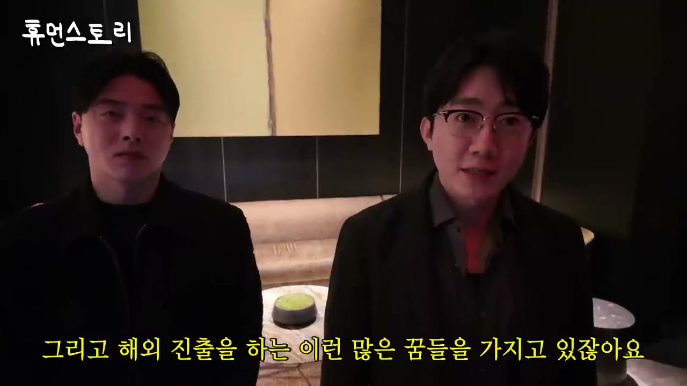
정 대표는 영어를 잘하지 못한다고 솔직히 말한다. 생활 영어 정도만 가능하다고 하며, 미국 일정에는 직원들과 동료들이 함께한다. 이 과정에서 최혜성 이사가 소개되는데, 그는 회사와 함께 운영하는 동료로 설명된다. 그동안 방송에는 최혜성 대표가 더 자주 나왔지만, 이번 휴먼스토리에는 정 대표가 직접 나온 이유가 있다.
정 대표는 본인이 방송을 조금 어려워해 잘 나가지 않았다고 말한다. 그런데 최혜성 이사만 나오면 일부 사람들이 “바지 사장”이라거나 “네가 운영하는 것이 아니면서 거짓말하지 말라”는 식으로 오해했다고 한다. 그래서 이번에는 실제로 함께 운영하고 있다는 점을 보여주기 위해 직접 나왔다. 정 대표는 최 이사와 12년 동안 같이 일했고, 모든 브랜드를 함께 만들어 왔다고 분명히 한다.
두 사람의 시작은 사장과 아르바이트생 관계였다. 정 대표가 동네에서 자영업을 할 때 최혜성이 아르바이트생으로 들어왔고, 일을 너무 잘해 함께해 보자고 한 것이 1943이라는 브랜드로 이어졌다고 설명한다. 8년 만에 700개 매장을 오픈한 것은 이례적이며, 많은 자영업자가 꿈꾸는 프랜차이즈 대표와 해외 진출을 실제로 이뤄낸 사례로 제시된다. 영상은 이후 노하우를 듣는 방향으로 넘어가며, 단순 성공담에서 사업 방법론으로 관심을 확장한다.
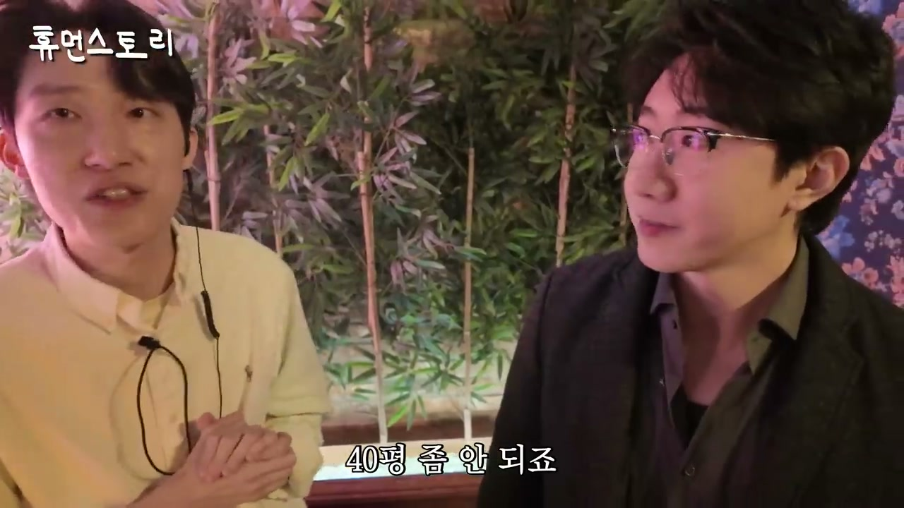
정 대표는 미국에 앞으로 약 20호점 정도가 계약 예정이라고 말한다. 마케팅 팀장은 현재 계약 기준으로 미국 주요 거점 지역에 약 20개 정도 계약이 진행 중이라고 보충한다. 동부권에서는 뉴욕 맨해튼, 뉴저지, 애난데일 버지니아, 스와니와 덜루스 같은 지역이 언급된다. 이 지역들은 한인 생활권이 강한 곳이면서도 미국 내 외식 소비가 활발한 거점이다.
뉴욕점 입구에서는 간판 이야기가 나온다. 미국은 간판 관련 규제가 까다롭고, 랜드마크 보호법 때문에 외부 간판 설치가 어려워 내부에 간판을 달았다고 설명된다. 이는 한국식 프랜차이즈의 시각적 브랜딩을 그대로 가져가기 어려운 미국 시장의 현실을 보여준다. 브랜드를 해외에 옮길 때 맛과 메뉴뿐 아니라 간판, 인테리어, 허가, 법규까지 현지화해야 한다는 점이 드러난다.
뉴욕점 점주는 운영 기간이 13개월 정도라고 말한다. 오픈하자마자 감사하게 손님이 많이 찾아와 꾸준히 평균 매출이 나오고 있으며, 월매출은 4억 원을 조금 넘는다고 설명한다. 매장 크기는 한국 평수 기준 약 60평이지만 주방을 제외하면 홀은 35~40평 정도다. 이 규모에서 월 4억 원 이상 매출을 내는 것은 좌석 회전율, 웨이팅, 객단가, 브랜드 인지도 등이 모두 결합된 결과로 해석된다.
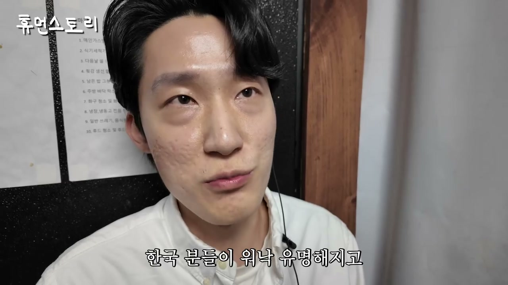
뉴욕점에서는 태블릿 주문 시스템이 중요한 운영 장치로 등장한다. 진행자는 미국에서도 티오더가 있냐고 묻고, 점주와 대표는 한국과 똑같다고 답한다. 손님은 영어와 한국어 중 언어를 선택할 수 있고, 메뉴 설명도 영어로 바꿔 볼 수 있다. 외국 손님은 직원에게 하나하나 묻지 않아도 음식이 무엇인지 바로 확인할 수 있고, 한국 손님은 한국어로 편하게 주문할 수 있다.
미국의 팁 문화와 연결된 설명도 중요하다. 미국에서는 서버가 많으면 팁을 나눠 가져야 하는 구조가 되는데, 태블릿 주문을 쓰면 서버 인원을 조금만 써도 운영이 가능하다. 그러면 적은 인원이 팁을 나눠 가지게 되어 직원에게도 좋고, 점주 입장에서도 인건비와 운영 효율 측면에서 유리하다. 정 대표는 미국 진출 브랜드들이 모두 티오더를 쓰고 있으며 한국에서도 사용 중이라고 설명한다.
메뉴와 재료에 대해서는 “한국 음식 그대로”라는 방향이 강조된다. 맛을 바꾸는 전용 소스는 본사에서 보내고, 미국 현지에서 구할 수 있는 재료에 맞춰 레시피를 다시 잡았다고 한다. 그 결과 한국의 맛을 잃지 않고 현지에서도 재현할 수 있게 만들었다. 이 방식은 해외 프랜차이즈에서 핵심 원료는 통제하고, 현지 조달 가능한 재료는 재설계하는 표준화 전략으로 읽힌다.
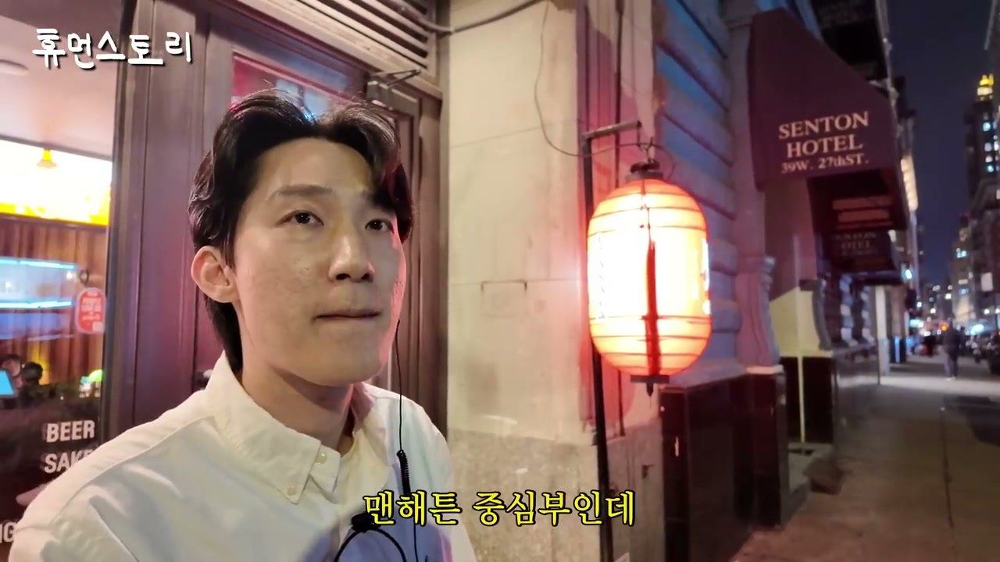
정 대표와 점주는 미국에서 한국 브랜드가 잘되는 배경으로 한류를 반복해서 언급한다. BTS가 한국 문화를 널리 알려 주었고, K팝이 유명해지면서 한국 음식과 한국 브랜드에 대한 관심도 커졌다는 것이다. 이자카야 시선이 한국에서 이미 유명하고 바이럴된 것도 미국 손님들이 검색하거나 찾아오는 데 영향을 주었다고 설명된다. 즉 수요는 현지 홍보만으로 만든 것이 아니라, 한국에서 쌓인 브랜드 인지도와 글로벌 한류가 함께 만든 결과다.
점주는 처음 프랜차이즈를 해 본 사람인데, 체계적인 시스템이 잘 되어 있어 좋다고 말한다. 본사와 계속 소통했고, 실제로 본사에서 와서 교육한 기간은 약 2주 정도였다고 한다. 이는 프랜차이즈 시스템의 강점이 단순 레시피 제공이 아니라 교육, 운영, 메뉴 구성, 주문 시스템, 매장 동선까지 포함한다는 뜻이다. 해외 점주에게는 처음 도전하는 업종이라도 본사의 매뉴얼과 현장 지원이 리스크를 줄여 주는 요소가 된다.
수익성도 직접 언급된다. 월매출이 약 4억 원일 때 순수익은 25%, 많게는 30% 정도라고 답한다. 진행자는 25%만 남아도 한 달에 1억 원 가까이 가져가는 것 아니냐고 계산한다. 점주는 세금 전후와 개인 조건에 따라 다르다고 조심스럽게 말하지만, 매장 자체의 수익 구조가 상당히 강하다는 점은 분명히 드러난다. 월세가 한국 돈으로 3,000만 원을 넘는다는 점까지 고려하면, 높은 매출과 웨이팅이 이 구조를 지탱하고 있다.
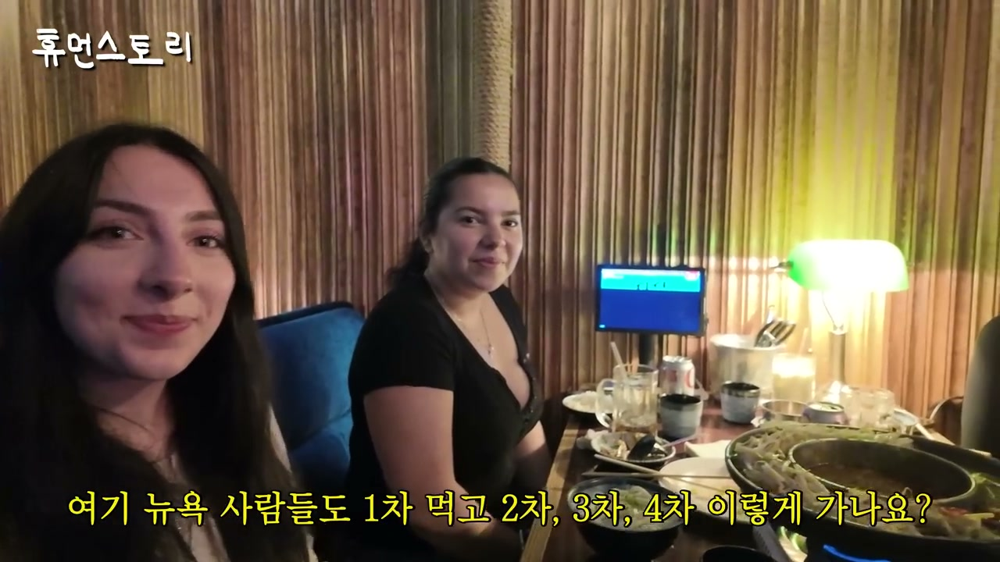
뉴욕점 앞에는 웨이팅 손님이 있다. 점주는 주말에는 영업이 끝날 때까지 웨이팅이 이어지고, 새벽 1시에도 웨이팅이 있다고 말한다. 주변 유동 인구가 엄청나게 많아 보이지 않는다는 진행자의 말에, 점주는 거리 초입에 유명 레스토랑이 몇 군데 있지만 자기 매장 쪽에서는 시선이 가장 손님이 많은 편이라고 설명한다. 이 대목은 상권이 단순히 사람 많은 곳인지보다, 브랜드가 목적 방문을 만들 수 있는지가 중요하다는 판단을 가능하게 한다.
위치 전략도 명확하다. 뉴욕점은 한인타운이 아니라 맨해튼 중심부에 있다. 점주는 한인타운 안에 한국 가게들이 몰려 있는 것보다, 떨어진 곳에서 외국인에게 브랜드가 더 잘 먹힐 것이라고 생각했다고 말한다. 실제로 외국 손님이 많이 오기 때문에, 이는 어느 정도 검증된 선택으로 제시된다. 진행자는 “한식집을 한인타운에만 할 필요가 없다는 걸 증명한 것”이라고 정리한다.
직원 인터뷰도 현장성을 더한다. 21살 한국인 직원은 미국에 5년 전에 왔고, 학교를 다니며 매장에서 일한다고 한다. 젊은 손님이 많고 바쁜 매장이라 일하기 재미있다고 답한다. 영어는 미국에서 살 만큼은 한다고 말하고, 주말에는 서버가 4~5명 정도 근무한다고 설명한다. 이 장면은 매장이 한인 직원에게도 일자리이자 미국 생활의 일부가 되고 있음을 보여준다.
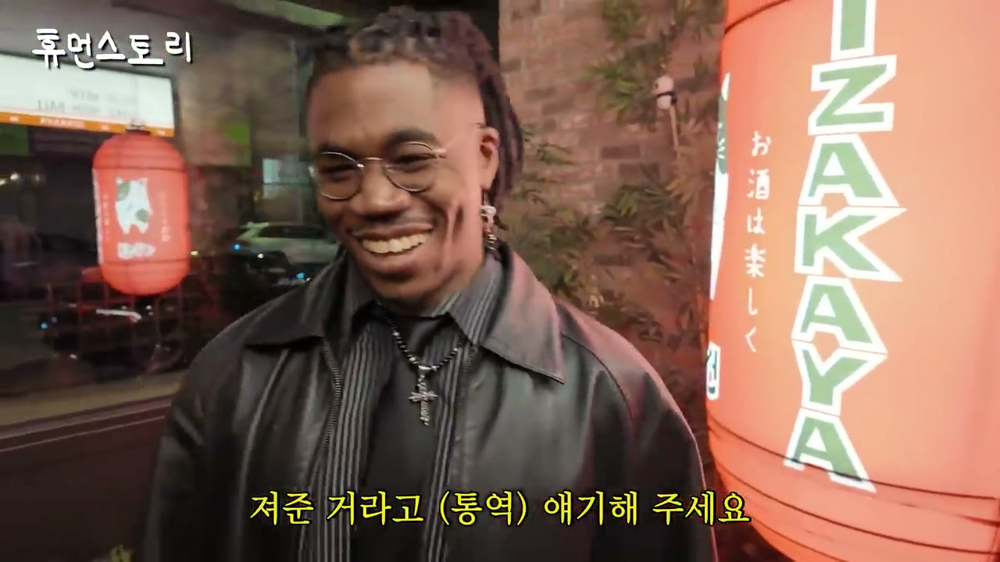
손님 인터뷰에서는 뉴욕점이 한인과 외국인 모두에게 어떻게 받아들여지는지가 드러난다. 한 손님은 평소 K타운에 자주 오고 여기저기 돌아다니는 것을 좋아하는데 친구들을 데려왔다고 말한다. 뉴저지에서 왔다는 손님은 이 음식이 평소 먹던 것과 다르지만 정말 맛있고, 특히 해산물 요리와 홍합이 맛있다고 평가한다. 이 반응은 한국식 이자카야 메뉴가 현지의 일반적인 식사 경험과 차별화되면서도 호감 있게 받아들여지고 있음을 보여준다.
또 다른 손님들은 이곳을 1차로 이용한 뒤 다른 곳으로 이동한다고 말한다. 진행자는 뉴욕 사람들도 한국처럼 1차, 2차, 3차, 4차를 가느냐고 묻고, 손님들은 그렇다고 답한다. “여기가 1차”라는 말은 이자카야 시선이 단순 식사 공간이 아니라 술자리 문화의 출발점으로 기능한다는 뜻이다. 한국식 주점의 “차수 문화”가 뉴욕에서도 자연스럽게 번역되고 있는 셈이다.
진행자는 손님들과 가볍게 농담도 주고받는다. 남자친구가 있는지, 한국 남자에 대해 어떻게 생각하는지, 한국 남자는 술을 잘 마신다는 반응 등이 이어진다. 이런 대화는 사업 분석 자체와 직접 관련은 적지만, 매장 분위기가 낯설고 딱딱한 공간이 아니라 사람 간 대화와 술자리 문화가 살아 있는 공간임을 보여준다. 구글에서 찾아보고 왔고 몇 주 전에 처음 와 본 뒤 너무 좋아 다시 왔다는 외국 손님의 말도 재방문 가능성을 보여주는 중요한 근거다.
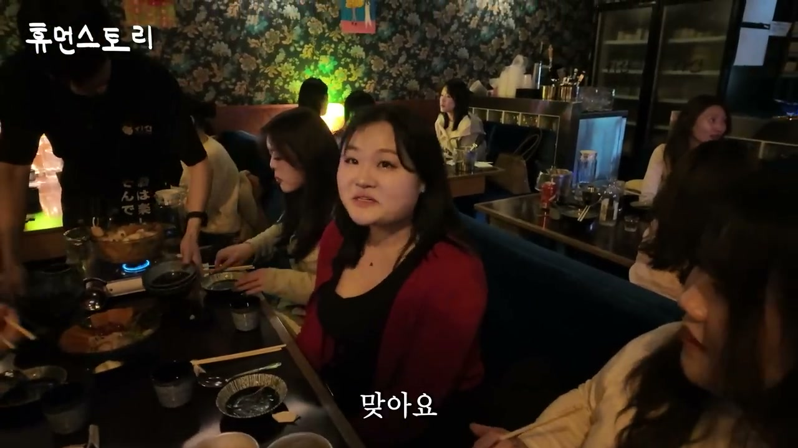
음식 장면에서는 메뉴의 폭이 드러난다. 손님은 떡볶이가 정말 맛있었다고 말하고, 진행자는 여러 메뉴를 보며 컵밥인지 묻지만 직원은 컵라면 볶음밥이라고 설명한다. 연어 육회, 스키야키, 꼬치구이도 등장한다. 메뉴 구성은 전통 한식만이 아니라 한국식 주점에서 소비되는 퓨전 메뉴와 술안주형 메뉴를 조합한 형태다.
말차 막걸리도 중요한 메뉴로 나온다. 직원은 말차 막걸리를 만들고 있으며, 손님상에 나갈 때 직접 부어 준다고 설명한다. 손님은 이 음료를 “위험하다”고 표현하는데, 맛있어서 쉽게 마시게 된다는 의미로 해석된다. 이 메뉴는 한국의 막걸리와 일본식 말차 이미지를 결합한 퓨전 음료이면서, 한국식 이자카야라는 콘셉트를 젊고 재미있게 만드는 역할을 한다.
직원 중 한 명은 뉴욕에 온 지 3년 정도 되었고, 회계사 트랙을 준비하고 있다고 말한다. 이중국적이 있다고 설명하며 미국에서 회계사 준비를 하고 있다고 한다. 매장 직원들이 단순 서비스 인력으로만 비치지 않고, 미국에서 공부하고 일하며 자기 진로를 만들어 가는 한인 청년들로 소개된다. 이는 매장이 한인 커뮤니티의 노동, 문화, 소비가 만나는 공간이라는 점을 보강한다.
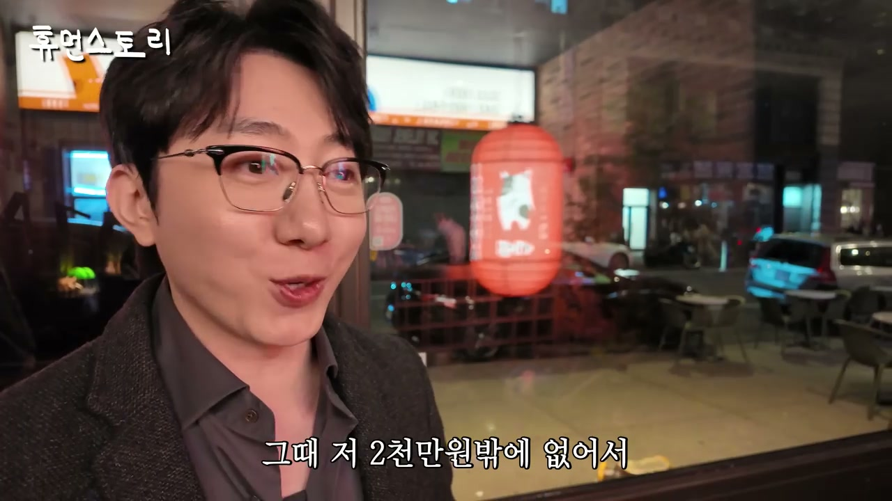
단골 손님 인터뷰에서는 인기 메뉴가 더 구체화된다. 손님은 뉴저지에 살고 자주 오는 단골로 소개되며, 연어와 육회가 특히 맛있다고 말한다. 또 다른 손님은 여자친구가 한국인이라 한국 음식과 매장에 익숙한 듯 보이고, 스키야키와 말차 막걸리가 많이 나간다고 말한다. 정 대표는 스키야키가 이자카야에서 매우 중요한 메뉴라고 설명한다.
하지만 이 스키야키는 일본식 그대로라기보다 코리아 이자카야답게 한국식을 더한 퓨전이다. 사람들이 편하게 먹을 수 있도록 조정했고, 막걸리도 마찬가지로 “이자카야에서 무슨 막걸리냐”는 반응이 있을 수 있지만 한국식 이자카야이기 때문에 말차와 막걸리를 섞었다고 말한다. 이 메뉴는 한국에서도 잘 팔리고 미국 사람들도 좋아한다고 설명된다. 브랜드의 정체성은 “일본식 이자카야 복제”가 아니라 “한국식으로 재해석한 이자카야”에 있다.
정 대표는 이자카야가 가격대가 있어 어린 친구들이 꺼릴 수 있다고 본다. 그래서 친근한 마스코트와 접근 가능한 가격대를 통해 20대 초반부터 40대, 50대까지 편하게 올 수 있도록 만들었다고 설명한다. 이 부분은 브랜딩 전략과 가격 전략이 연결되는 지점이다. 단순히 메뉴를 잘 만드는 것만이 아니라, 고객이 심리적으로 들어오기 쉬운 분위기를 만드는 것이 중요하다는 판단이다.
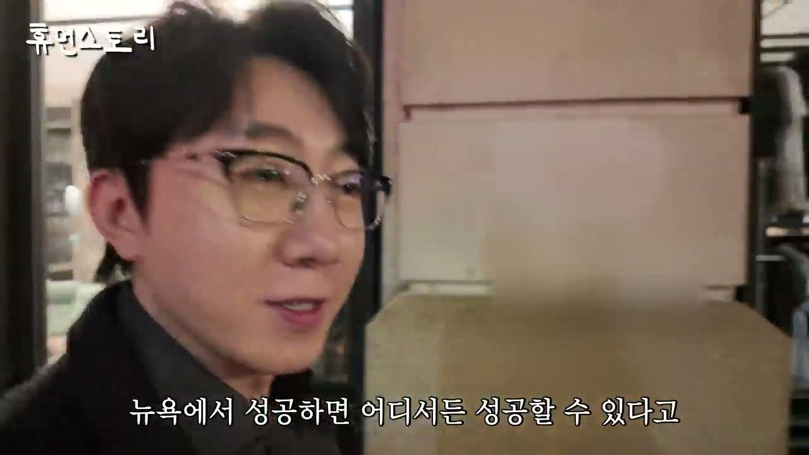
정 대표는 자신이 고졸 출신이라고 말한다. 할 것이 정말 없었고, 무엇을 해야 하나 고민하다가 20대 초중반에 공장에서 일했다고 한다. 27살 때까지 모은 돈이 2,000만 원이었고, 그 돈으로 처음 창업한 것이 맥주집이었다. 처음부터 인쌩맥주를 한 것은 아니고, 당시 유행하던 셀프맥주 아이템을 했다고 설명한다.
셀프맥주는 냉장고에 맥주가 진열되어 있고 손님이 직접 꺼내 먹는 방식이었다. 그는 보증금 2,000만 원, 임대료 80만 원, 인테리어비 2,000만 원으로 오픈했는데, 자신에게는 2,000만 원밖에 없어 보증금은 어머니에게 빌렸다고 말한다. 보증금은 어차피 반환되는 돈이기 때문에 빌릴 수 있었다는 식으로 설명된다. 첫 창업은 자본이 넉넉해서가 아니라 부족한 자금과 가족의 도움, 절박함으로 시작된 것이다.
그 가게가 잘되자 앞쪽 대형 호프집으로 확장했고, 거기서도 잘되어 안산 번화가 중앙동에 1943을 오픈했다. 진행자는 그 2,000만 원으로 시작한 것이 지금까지 이렇게 커진 것이라고 정리한다. 정 대표는 장사를 배운 적도 없고 해 본 적도 없었지만, 절실했다고 말한다. 손님 한 명 한 명의 얼굴을 기억하고 서비스를 잘 챙겼으며, 특별한 기술이나 학벌이 없었기 때문에 이것 아니면 안 된다는 마음으로 했다.
정 대표는 어머니가 어릴 때부터 공부하길 원했지만 자신은 게임을 좋아했다고 말한다. 특히 스타크래프트를 좋아했는데, 사업을 해 보니 게임과 너무 비슷하다고 느꼈다고 한다. 사업도 전략을 세워 매장을 오픈시키고 매출을 일으키는 과정이라는 것이다. 그는 매출이 나는 과정이 재미있어서 이 일에 더 빠져들었다고 설명한다.
이 비유는 그의 사업 방식을 이해하는 핵심이다. 프랜차이즈 확장은 단순히 가게를 많이 여는 것이 아니라, 지역을 고르고, 아이템을 배치하고, 인력을 운영하고, 브랜드별 포지션을 나누는 전략 게임에 가깝다. 스타크래프트처럼 자원, 빌드, 타이밍, 확장, 전투력을 관리해야 한다는 감각이 외식 사업으로 옮겨진 셈이다. 이 설명은 그가 전통적인 경영 교육이 아니라 현장 경험과 전략적 직관으로 사업을 키웠다는 점을 보여준다.
촬영 중에는 마케팅 팀장 승배가 개인 인스타그램 촬영을 하려다 진행자에게 농담 섞인 제지를 받는 장면도 나온다. 이는 회사 내부가 유튜브와 SNS 홍보를 자연스럽게 활용하는 조직이라는 점을 보여준다. 실제로 미국 점주도 유튜브와 인스타그램 홍보를 통해 인쌩맥주를 알게 되었다고 말한다. 브랜드 확장에는 매장 운영뿐 아니라 미디어 노출, 바이럴, 콘텐츠 생산이 함께 작동하고 있다.
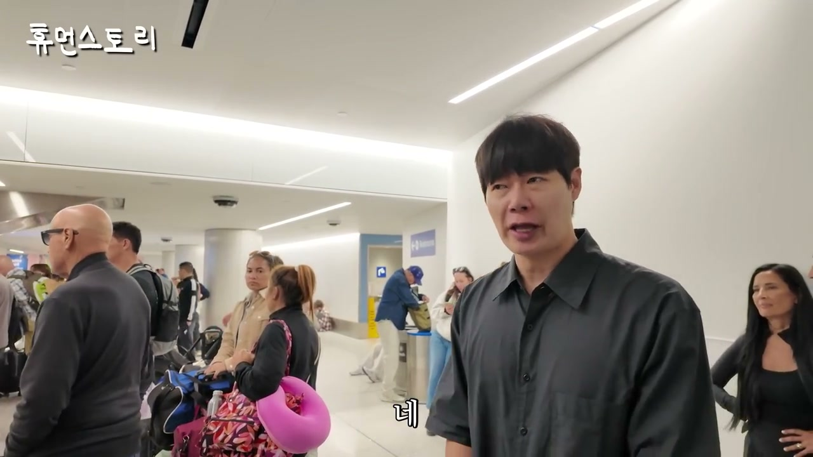
뉴욕 일정을 마친 뒤 정 대표 일행은 다음 날 오전 공항으로 이동해 LA로 넘어간다. 그는 캘리포니아 부에나파크 호텔에 짐을 풀고 인쌩맥주로 갈 계획이라고 말한다. 뉴욕에서 목이 쉰 이유는 점주와 직원들과 많은 대화를 나누었기 때문이라고 설명한다. 이 장면은 하루 일정이 단순 방문이 아니라 현장 확인, 인터뷰, 관계 관리, 운영 점검으로 빡빡하게 구성되어 있음을 보여준다.
정 대표는 뉴욕에서 성공하면 어디서든 성공할 수 있다는 말이 있다고 언급한다. 한국에서는 수백 개 매장을 열었지만, 미국에서는 바닥부터 다시 시작해 증명하고 검증해야 하는 시장이라고 표현한다. 그래서 걱정도 많았지만 좋은 결과가 나와 다행이라고 말한다. 이는 국내 성공이 해외 성공을 자동 보장하지 않는다는 냉정한 인식을 담고 있다.
그는 자신을 “안산 촌놈”이라고 표현하며 미국에서 일한다는 것이 신기하다고 말한다. 하지만 동시에 미국에서 얼마나 성장할 수 있을지 꼭 도전해 보고 싶은 시장이라고 한다. 이 말은 겸손한 자기 인식과 공격적인 시장 확장 의지가 함께 있는 표현이다. 영상의 전반부가 뉴욕에서의 성과 확인이었다면, LA 구간은 미국 시장의 다른 상권과 브랜드 적합성을 검증하는 흐름으로 넘어간다.
LA에 도착한 뒤 인쌩맥주 LA점 매출이 언급된다. 마케팅 팀장은 이번 달 매출이 4억 중반이라고 말한다. 진행자는 인쌩맥주 LA점도 한 달에 4억 원을 파는 것이냐고 묻고, 최근 오픈한 지 한두 달밖에 되지 않았다는 설명이 이어진다. 오픈하자마자 4억 원대 매출을 내는 구조는 LA 한인 생활권에서 브랜드 인지도가 이미 형성되어 있었기 때문에 가능했다고 해석된다.
정 대표는 LA 쪽에는 한인들이 많이 살고 있고, 이미 브랜드를 아는 사람들이 많아 오픈을 기다리는 분들이 많았다고 말한다. 점주는 유튜브와 인스타그램 홍보를 통해 처음 인쌩맥주를 알게 되었고, 콘셉트가 캘리포니아 쪽에 잘 맞을 것이라고 판단했다고 한다. 캘리포니아는 사계절 더운 지방에 가까워 시원한 맥주 콘셉트가 잘 맞는다는 설명도 덧붙는다. 즉 LA 인쌩맥주는 이자카야 시선과 달리 더운 지역, 맥주, 한인 생활권이라는 조건이 결합된 사례다.
매장은 부에나파크, 오렌지카운티 안에 있다. 점주는 1997년에 미국에 와서 계속 살고 있으며, 매장 옆 풀러턴에 산다고 설명한다. 부에나파크와 풀러턴 일대는 LA 코리아타운 다음으로 큰 한인 타운 성격을 가진 지역으로 소개된다. 이 입지는 뉴욕 시선처럼 한인타운 밖에서 외국인 노출을 노린 전략과는 다르게, 한인 기반 수요를 먼저 확보한 뒤 외국 손님으로 확장하는 방식이다.
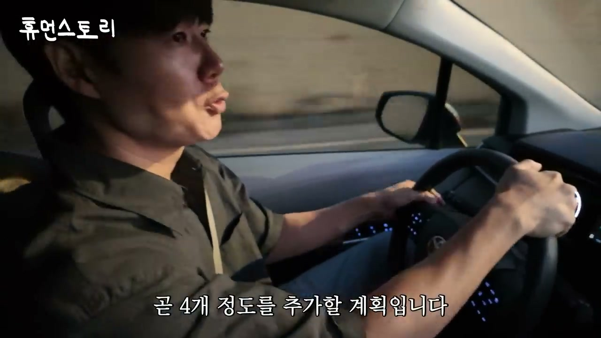
LA 인쌩맥주 점주는 첫 오픈 후 둘째 주까지는 한국 손님이 대부분이었지만, 셋째 주부터 외국 손님들이 많이 들어오기 시작했다고 말한다. 두 달 만에 4억 원 가까이 매출을 올리면 정신없을 것 같다는 질문에는 굉장히 행복하게 하고 있지만 체력적으로 많이 힘들다고 답한다. 이 말은 높은 매출이 곧바로 높은 노동 강도와 운영 부담으로 이어진다는 현실을 보여준다.
매장 운영 수치도 자세히 나온다. 주방에는 약 8명이 있고, 서버는 약 12명 정도 있다고 한다. 매장 면적은 약 120평이고, 테이블은 30개가 있으며 곧 4개 정도를 추가할 계획이다. 120평 규모에 비해 테이블 수가 아주 많지 않은 이유는 미국 시에서 요구하는 위생법과 승인 절차 때문이라고 설명된다. 처음에는 정해진 테이블 세팅으로 승인받아야 하고, 승인이 나면 추가할 수 있어 현재는 30개만 놓고 있다는 것이다.
이 구간은 미국에서 매장을 열 때 한국식으로 빠르게 확장하기 어렵다는 점을 분명히 보여준다. 공간이 넓어도 법규와 승인 절차 때문에 좌석을 마음대로 늘릴 수 없다. 매출 규모는 크지만, 규정 준수와 인허가 대응이 필수다. 프랜차이즈 본사가 해외 확장을 하려면 점주 교육뿐 아니라 각 도시의 법규, 위생, 공사, 좌석 승인까지 관리할 역량이 필요하다는 점이 드러난다.
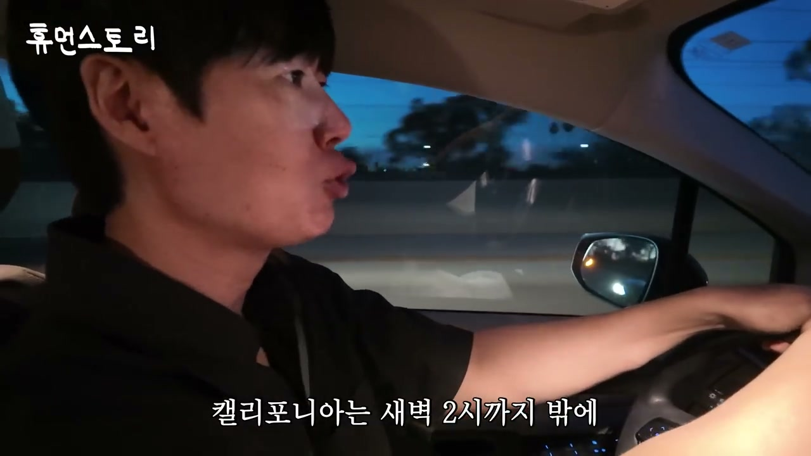
LA 점주는 미국에서 한국 문화의 위상이 크게 달라졌다고 말한다. 1997년에 처음 왔을 때는 한국인이라고 해도 한국이 어디인지 모르는 사람이 있었고, 아시아라고 하면 일본이나 중국 정도만 떠올리는 경우가 많았다고 한다. 그런데 지금은 동양인 이야기가 나오면 한국인이냐고 먼저 물어볼 정도로 한국에 대한 호감도가 높아졌다고 설명한다. 이 변화는 한식 프랜차이즈가 미국에서 성장할 수 있는 중요한 배경이다.
정 대표도 이 타이밍이 운과 잘 맞아떨어졌다고 말한다. BTS, K팝, K팝 데몬 헌터스, 손흥민 선수 같은 한국 문화와 인물의 글로벌 활약이 한국 브랜드에 대한 관심을 높였다고 본다. 점주는 원래 BTS 팬이었는데 이제 더 팬이 되었다고 농담처럼 말한다. 한국 문화가 높아진 덕분에 한국 브랜드를 더 많이 사랑해 주지 않을까 생각한다는 말도 나온다.
LA점은 오후 6시에 오픈해 새벽 2시까지 영업한다. 캘리포니아는 새벽 2시 이후 술 판매가 어려운 법이 있어, 하고 싶어도 더 이상 영업하기 어렵다고 설명된다. 매출이 많이 나와 행복하고 재미있게 일하고 있지만, 오픈 과정은 쉽지 않았다. 공사 문제로 2년 동안 열지 못했고, 시의 중간 검사가 20번 이상 있었으며, 아무것도 없는 새 건물에 들어갈 때는 절차가 더 까다롭다고 한다. 이 대목은 미국 진출의 화려한 결과 뒤에 긴 준비와 규제 통과 과정이 있었음을 보여준다.
“2천만 원으로 창업을 했습니다.”
“그러면 2천만 원으로 2천억을 만드신 거예요? 네, 맞습니다.”
“오픈한 지점이 700개 정도 있습니다.”
“700개 매장 매출의 합이 2,000억 정도 나오고 있습니다.”
“미국 주요 거점 지역에 약 20개 정도 계약 진행 중에 있고요.”
“월에 4억 이상을 팔고 있어요.”
“한국의 맛을 잃지 않고 그대로 나오고 있습니다.”
“한인타운이랑 떨어져 있는 게 좋을 거라고 생각했습니다.”
“외국인 분들한테 오히려 이 시선 브랜드가 조금 더 먹힐 거라고 생각했습니다.”
“처음 오픈한 겁니다. 확실히 체계적이고 시스템이 잘 되어 있습니다.”
“사실 미국은 때에 따라 다르긴 한데 그래도 25%, 많게는 30% 정도 가져가요.”
“저는 사실 고졸 출신이거든요. 할 게 정말 없었어요.”
“27살 때까지 모아둔 돈이 2천만 원이었는데 그 2천만 원으로 처음 창업한 게 맥주집이었어요.”
“배운 적도 없고 해본 적도 없고요. 그런데 되게 절실했어요.”
“사업을 해보니까 게임이랑 너무 비슷한 거예요.”
“한국에서는 수백 개의 매장을 오픈시켰지만 여기 미국에서는 바닥부터 다시 시작해야 되는 시장이어서 걱정을 많이 했습니다.”
“이번 달 매출이 4억 중반이요.”
“첫째 주, 둘째 주까지는 한국 손님들이 대부분이었는데 셋째 주부터는 외국 손님들이 많이 들어오기 시작했어요.”
“한국이라는 나라 자체의 위상이 너무 올라간 걸 현지 교민으로서 많이 느끼고 있습니다.”
이 영상의 1편은 WD 정승민 대표의 성공을 “돈을 많이 번 젊은 회장”의 이야기로만 소비하지 않는다. 핵심은 2,000만 원으로 시작한 개인 창업이 어떻게 700개 매장, 2,000억 매출, 미국 주요 도시 진출로 이어졌는지 현장에서 검증하는 데 있다. 뉴욕 맨해튼 이자카야 시선은 한인타운 밖에서도 한국식 주점이 외국인 손님을 끌어들일 수 있음을 보여주고, LA 부에나파크 인쌩맥주는 한인 생활권과 더운 지역의 맥주 수요가 결합될 때 오픈 초기부터 폭발적인 매출이 가능하다는 점을 보여준다.
사업적으로 가장 중요한 시사점은 세 가지다. 첫째, 해외 진출은 메뉴만 가져가는 것이 아니라 시스템, 교육, 주문 방식, 소스 공급, 현지 재료 재설계, 인허가 대응까지 함께 가져가야 한다. 둘째, 한류와 K-문화의 확산은 실제 외식 매출과 고객 유입에 영향을 주고 있으며, 한국 브랜드가 미국에서 더 이상 한인 고객에게만 의존하지 않아도 되는 환경을 만들고 있다. 셋째, 정승민 대표의 창업 서사는 학력이나 자본보다 절실함, 현장 서비스, 반복된 매장 운영 경험, 팀워크, 전략적 확장 감각이 외식 프랜차이즈 성장의 본질임을 보여준다.
다음 편으로 이어질 내용은 미국 현지 매장 운영의 더 깊은 부분, 브랜드별 차이, 추가 지역 방문, 그리고 정승민 대표가 미국 시장에서 어떤 방식으로 더 확장하려는지에 대한 후속 맥락이 될 가능성이 높다. 1편만 놓고 보면 이미 결론은 분명하다. WD는 한국에서 성공한 프랜차이즈를 미국에 단순 복제하는 단계가 아니라, 현지 고객 반응과 매출로 다시 검증하며 글로벌 외식 브랜드가 되려는 실험을 진행 중이다.
댓글
GitHub 이슈 기반 댓글 시스템입니다.